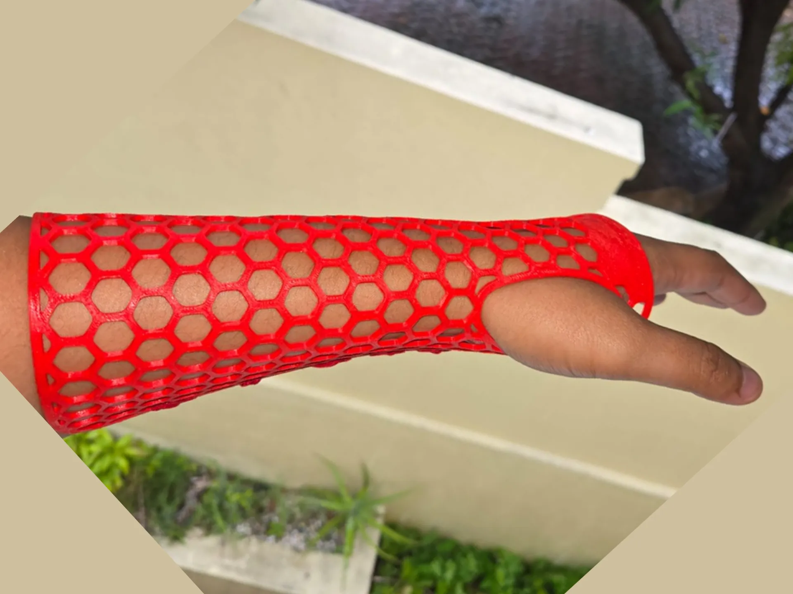
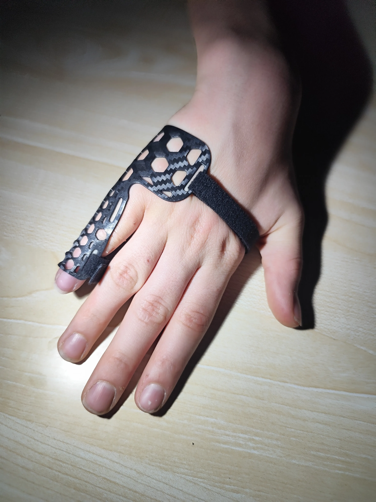
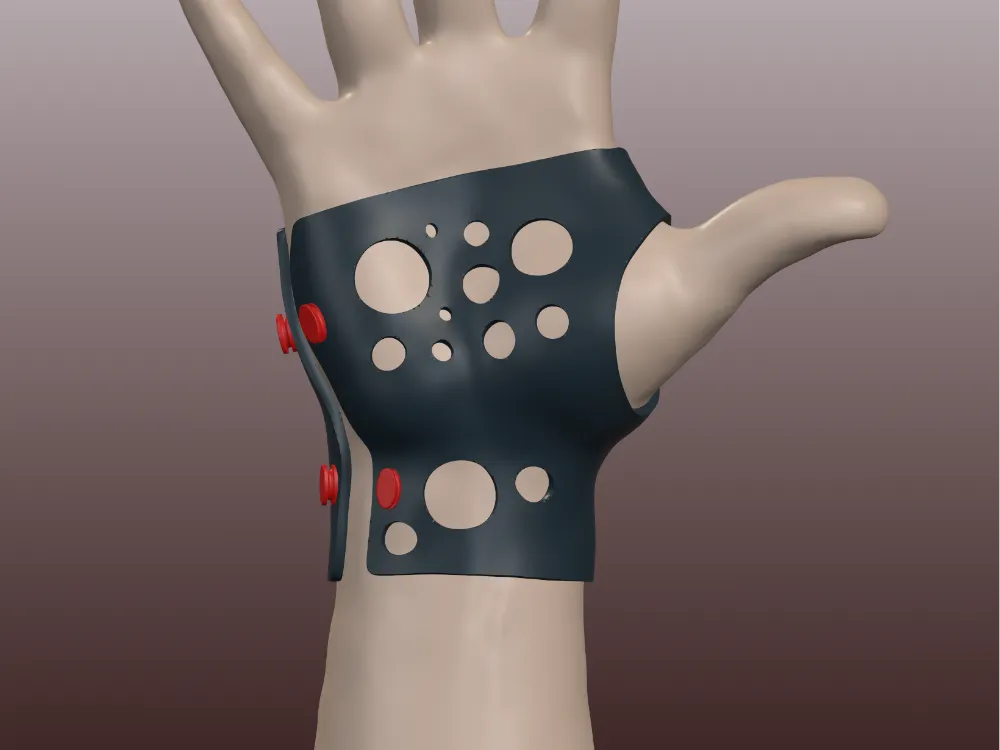
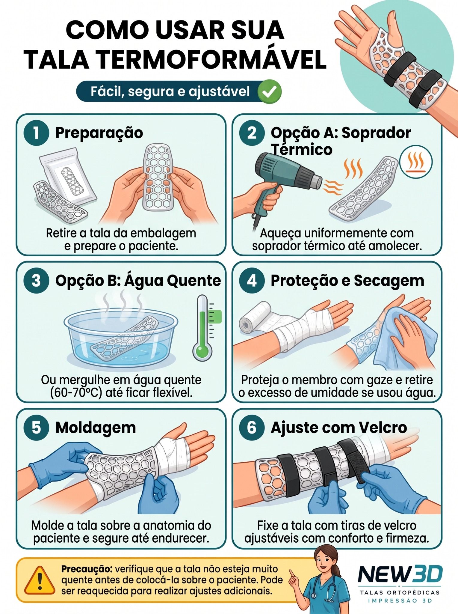

Desafios do gesso convencional
- Acúmulo de umidade, calor e odores
- Dificuldade para contato com água
- Maior peso e menor ventilação
- Processo de aplicação e retirada mais trabalhoso
Talas ortopédicas termoformáveis impressas em 3D. Uma nova abordagem para clínicas, consultórios e hospitais.

O design da New3D busca tornar a imobilização mais leve, ventilada, ajustável e prática para o ambiente clínico.
Modelos apresentados como ponto de partida para uma linha de órteses termoformáveis. Novas geometrias podem ser adicionadas ao catálogo.

LINHA FALANGESTalas compactas para extensão, imobilização e suporte em diferentes situações clínicas, conforme indicação profissional.
Quero conhecer →
EXEMPLO REALSuporte para condições como tendinites, síndrome do túnel do carpo e entorses, buscando estabilidade sem bloquear desnecessariamente os dedos.
Quero conhecer →Goteiras anatômicas para diferentes protocolos de recuperação, com rigidez estrutural e ventilação contínua.
Quero conhecer →Um processo pensado para permitir que a peça plana seja aquecida, moldada e ajustada no ambiente de atendimento.

Abertura da embalagem e preparo do paciente.
Soprador térmico como opção de aquecimento a seco.
Alternativa por imersão em água quente, conforme especificação do material.
Proteção da pele e controle da umidade.
Ajuste da peça sobre a anatomia até o resfriamento.
Fixação com tiras de velcro ajustáveis.
A proposta combina fabricação digital e termoformagem para criar peças planas que podem ganhar forma no momento da aplicação.
Material termoplástico usado na fabricação por impressão 3D, com comportamento moldável dentro de uma faixa de temperatura definida pelo projeto.
A peça retorna à rigidez estrutural depois da conformação e do resfriamento.
O padrão vazado reduz material e favorece a circulação de ar em comparação com uma superfície fechada.
Fornecimento de kits de talas planas pré-impressas para hospitais, clínicas de ortopedia, traumatologia e consultórios de fisioterapia.
Quero falar sobre parceria →Peças planas ocupam pouco espaço antes da moldagem.
A peça pode estar pronta para moldagem sem depender de uma impressão durante o atendimento.
Tala, tiras de velcro e manual de instrução podem compor o kit.
Produção digital permite desenvolver diferentes tamanhos e geometrias.
Entre em contato para conhecer os modelos, discutir aplicações e conversar sobre fornecimento para sua clínica ou instituição.